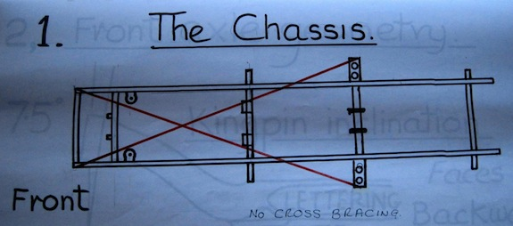

MG TC4985

Build date: 10th March 1948
Chassis number: TC4985
Original enginer number: XPAG 5506
Present engine number: XPAG 7592
Registration: 764 YUD
Purchase date: 20th June 2015
Links (on page):
Links (off page):
- The history of TC4985
- Outings
- Service Notes
- Radiator Mounting Bracket & Engine Mounts
- Handbrake Cables
- Stub Axles
- Leaking Fuel Sender Unit
- Odometer Trip Reset
- Side Screen Box
- Spring Bushes
- Flashing Indicators
- Distributor Bushes
- Windscreen Wiper Motor
- Rear Axle Problem
- Relining Rear Brakes
- Steering Drop Arm
- Cleaning Prop Shaft and Tunnel
- Fitting the Pedals Draught Excluder
In the summer of 1970, after my first year at university, I worked as an 'assistant caretaker' for the London Borough of Barnet so as to earn enough money to buy a car. At that time I was interested in several MG TCs that were advertised for around £100, but my Dad didn't think that a TC would be very practical to get me and my stuff from Potters Bar to Lancaster and back. He was probably right, so I bought a ten year old Ford Prefect 107E!
Fast forward 48 years and I've been retired for two years. I sold my MGF when I retired (because we only need one car), but have missed it ever since. We've owned 'old' cars, at various times, in the form of Minis, a Mk1 Triumph Spitfire and a Morris 1000 Traveller, but my love of the TC has never diminished. Over recent years I had looked at what was on the market in the way of TCs, particularly those built in 1948. Nowadays, one in reasonable condition is selling for something between £25,000 and £35,000!
So after a lot of attempts to persuade Angela that buying a TC was a good idea (which never really worked) I looked at three cars before finding TC4985. Some details of those cars can be found here.
The car that I bought was advertised on the Octagon Club web site. I had seen it earlier, but it was near Clacton in Essex (125 miles away) and so I initially ignored it. It was advertised as:
MG TC 1948. Chassis no. TC 4985. Finished in sequoia cream with new shires green leather upholstery. New tan double duck hood and side screens. Correct headlamps and fog light, new wiring loom fitted. Many other items replaced in order to make this a very attractive and much admired TC. £24,995.
He had owned it for just over three years and bought it from a dealer in Kent. The car had been brought back from the US, he thinks, by someone in Seaford, who did a lot of mechanical work on it, but who was then too old and large around the waiste to drive it (it is tight behind the wheel). Chris (the current owner) found that a lot of parts were not original TC but had been replaced with TD parts, these being more easily available in the US.
Chris said that the car has a TD engine, although still an XPAG. However, by looking at the engine number plate and the 'T database' I subsequently found that the engine is from a TC that was built during October 1948. The car also has abnormal air filters. Chris had removed under seal and painted the chassis with dark green Hammerite. He had it resprayed from white to the original sequoia cream, replaced headlights, fog light and rev counter. He also had a new hood made.
 I noticed that the footplate had not been painted, that the normal TC air filter had been replaced with two separate units and that the front suspension was only a little way off the bump stops (¼ on one side and ¾ on the other). However, it was just old enough to have a walnut veneered dashboard. Chris had fitted a new wiring loom and had it converted to negative earth. He had also fitted flashing indicators in the side lights at the front and on lights fixed to the luggage rack at the rear. I had already established that 1948 was the first year that sequoia cream was available and that the T-series register had this car down as being cream/red, in other words, originally with red upholstery.
I noticed that the footplate had not been painted, that the normal TC air filter had been replaced with two separate units and that the front suspension was only a little way off the bump stops (¼ on one side and ¾ on the other). However, it was just old enough to have a walnut veneered dashboard. Chris had fitted a new wiring loom and had it converted to negative earth. He had also fitted flashing indicators in the side lights at the front and on lights fixed to the luggage rack at the rear. I had already established that 1948 was the first year that sequoia cream was available and that the T-series register had this car down as being cream/red, in other words, originally with red upholstery.
 Chris had lots of receipts for parts obtained in the UK, but no documentation of what had been done in the US.
Chris had lots of receipts for parts obtained in the UK, but no documentation of what had been done in the US.
 After going for a drive (Chris drove, since I was not insured) I offered the asking price, but he reduced it by the cost of a new set of front springs, which we looked up on the NTG web site, to a resultant price of £24,650. At first I was thinking of trying to drive it home, but the journey, even in a modern car, was not pleasant, so I booked transport for Saturday 20th June 2015 with a man in Sompting, who had three TR6s and seemed to do classic car transport as a hobby. Meanwhile I arranged insurance and, having left a deposit, transferred the rest of the money.
After going for a drive (Chris drove, since I was not insured) I offered the asking price, but he reduced it by the cost of a new set of front springs, which we looked up on the NTG web site, to a resultant price of £24,650. At first I was thinking of trying to drive it home, but the journey, even in a modern car, was not pleasant, so I booked transport for Saturday 20th June 2015 with a man in Sompting, who had three TR6s and seemed to do classic car transport as a hobby. Meanwhile I arranged insurance and, having left a deposit, transferred the rest of the money.
 When we got home I reversed the car into the garage, alongside the Panda. There is just enough room for them to lie side-by-side and still be able to open the driver's door. However, I need to move my shelving unit along so that the gap is where the MG's door actually opens. Then, on the Sunday, I drove it to the BP garage in Beeding and put 10 litres of unleaded petrol in the tank, together with 50 cl of Millers VSPe additive, as used by the previous owner. I found that the steering is extreemly heavy. When the front wheels are jacked up off the ground, however, everything moves easily and smoothly, with no evidence of wear. I also took Angela for a drive to Dad's (about six miles), which she did not enjoy! When we got home I discovered that the brakes seemed to be binding. I later established that they were binding on all wheels! This could be a known problem with the master cylinder when the rubber parts are old. However, the master cylinder is bolted to the chassic under the floor, with a heat shield to protect it from the exhaust. Even when the car is up on axle stands it is very difficult to get to the master cylinder, so I booked it into Cripps Motors in Storrington to get them to look at it. I also asked them to look at a grease point on the lower near side king pin, into which I can't get grease, and to check the steering/front suspension.
When we got home I reversed the car into the garage, alongside the Panda. There is just enough room for them to lie side-by-side and still be able to open the driver's door. However, I need to move my shelving unit along so that the gap is where the MG's door actually opens. Then, on the Sunday, I drove it to the BP garage in Beeding and put 10 litres of unleaded petrol in the tank, together with 50 cl of Millers VSPe additive, as used by the previous owner. I found that the steering is extreemly heavy. When the front wheels are jacked up off the ground, however, everything moves easily and smoothly, with no evidence of wear. I also took Angela for a drive to Dad's (about six miles), which she did not enjoy! When we got home I discovered that the brakes seemed to be binding. I later established that they were binding on all wheels! This could be a known problem with the master cylinder when the rubber parts are old. However, the master cylinder is bolted to the chassic under the floor, with a heat shield to protect it from the exhaust. Even when the car is up on axle stands it is very difficult to get to the master cylinder, so I booked it into Cripps Motors in Storrington to get them to look at it. I also asked them to look at a grease point on the lower near side king pin, into which I can't get grease, and to check the steering/front suspension.
Steering Geometry
I decided that, before taking the car to Cripps, I should try to check the steering geometry. Following an article in the August and October 2013 issues of Totaly T-Type I measured:
- Chassis diagonals (so as to check for any distortion of the chassis)
- Camber angle on both front wheels
- Castor angle for both front wheels
The Totally T-Type article (from which the diagram is taken) suggests that the two diagonals should be within a ¼" of each other. So as to measure these diagonals I projected the four points on the chassis down on to the ground using a plumb bob and marked them with chalk. Then I measured between the chalk marks. I estimate that I introduced an error of ±¼" and I was happy that my two measurements were within ½" of each other. So I concluded that the chassis is 'square'.
 Measuring the camber angle was a little more complex. As can be seen from the photo, I made a device consisting of a piece of hardwood into which I hammered (into pre-drilled holes) two large nails, each protruding the same amount. Hanging from the wood, via a loose-fitting nail, was a T-square (any straight edge would have done). With the large nail heads on the rim of the wheel, the T-square swung (under its own weight) to the vertical, forming a right-angled triangle with the edge of the wood. Measuring the base of the triangle and the deflection (opposite the angle of interest) allowed me to calculate the camber angle. Both sides gave the same deflection, calculated as 2.5°, which is close to the 3° stated in the article. Considering my crude measuring device and the fact that I got the same answer for both sides, I'm happy that the camber angle is correct and, more importantly, the front axle is not bent.
Measuring the camber angle was a little more complex. As can be seen from the photo, I made a device consisting of a piece of hardwood into which I hammered (into pre-drilled holes) two large nails, each protruding the same amount. Hanging from the wood, via a loose-fitting nail, was a T-square (any straight edge would have done). With the large nail heads on the rim of the wheel, the T-square swung (under its own weight) to the vertical, forming a right-angled triangle with the edge of the wood. Measuring the base of the triangle and the deflection (opposite the angle of interest) allowed me to calculate the camber angle. Both sides gave the same deflection, calculated as 2.5°, which is close to the 3° stated in the article. Considering my crude measuring device and the fact that I got the same answer for both sides, I'm happy that the camber angle is correct and, more importantly, the front axle is not bent.
Finally there is the question of the castor angle. According to the article, the castor angle on a TC is made up of 5° due to the spring slope plus 3° due to the axle, making a total castor angle of 8°. This can be reduced to 5.5° by inserting a taper plate between the axle and the spring plate.
I jacked up the front of the car, lowered it on to axle stands under the spring plates and removed the front wheels. Using the same device, but with nails close enough to locate on the top part of the stub axle and the lower part of the axle enclosing the king pin. The alignment of these two surfaces and any slight difference in th protrusion of the nails will add to the measurement error. However, I measured close to 6° on both sides, so at least it is in the right ballpark.
The one measurement that I am unable to make is the toe-in, so I will get Cripps to check this. There is no feathering or uneven wear on the tyres, but they are relatively new such that wear is unlikely to show. According to the TC manual, the toe-in should be 3/16" (5mm).
Colin Cripps said that the tracking is within tolerance and the steering, although slightly heavy, is fine. He seemed to think that this is due to the steering box being adjusted fairly tightly. However, slackening it will increase the play in the steering. Since the steering moves very easily when the wheels are off the ground, I have my doubts about the box adjustment being to blame. The Bishops Cam box has a Tompkins Kit fitted, which locates a roller bearing to the top of the sector shaft (that is rotated by the worm gear) and provides an adjustment screw.
He couldn't get grease into the near-side king pin lower nipple either. He said that the lower bush is protruding slightly and so the hole in the bush (and spiral groove) does not align with the nipple. I could try drilling through the bush, but I should not try to force the bush in. The bushes are a press fit and so not something that I could do.
Go to topBrakes
The piston in the old master cylinder was corroded and so would not return properly. So after 20 presses the brakes were jammed on. The car now has a new master cylinder (and Dot 4 Girling brake fluid), but the brake shoes are still slackened right off. I need to adjust them. Colin Cripps commented that the handbrake cables have stretched (one having a ‘spreader’ in it to shorten it). They really need replacing!
Go to topOil Levels
Checking the engine oil level is easy. Once you have opened the near-side bonnet the dipstick is easily visible and accessibile. However, I could not see how to check the oil level in the gearbox and looking at the back axle from under the car suggested that topping up the oil would be almost impossible! However, after visiting Stewart Penfound (a TA owner, but with an XPAG angine and gearbox) in Brighton I firstly discovered that there should be a dipstick in the gearbox and secondly that by removing the tonneau floor you could easily get at the back axle!


It was soon clear that the dipstick was there, it was just under the rubber gearbox cover! Removing the cover, extracting the dipstick, refitting the cover and then inserting the dipstick solved the problem. Actually the cover lifts the dipstick about an inch above the hole into which it fits, so to check the oil level it is necessary to push the dipstick down, distorting the cover, so as to get a true reading. The top of the dipstick and the oil filler plug can be seen in the photo.

In the final photo you can see that, once you have unscrewed the floor of the tonneau and removed it, the filler plug for the back axle is easily reached. You simply add oil until it starts to escape from the hole in the side of the casing from which the plug has been unscrewed.
Go to top© David James 2018 Last updated: 16th November 2017